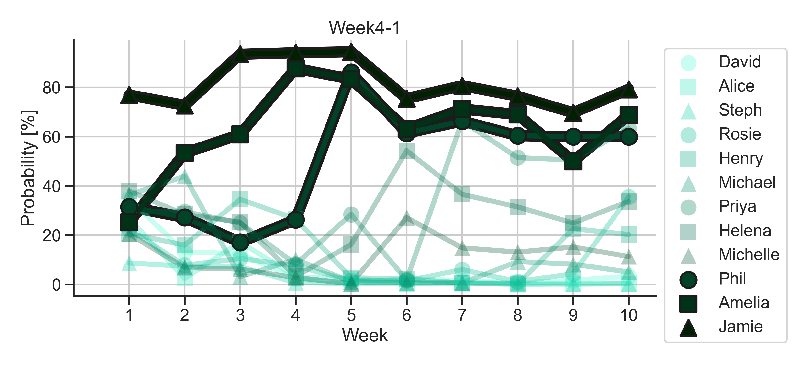

DeepBake Season 10
Retrospective analysis of Season 10 predictions
Winner
DeepBake determined each baker’s chance of placing in five different categories.
The legend has the bakers in order of their final placings.
The 'Winner' category is reserved for the baker that wins GBBO. DeepBake called David as the winner at the quarter final.
Finalist
DeepBake scored bakers individually, allowing for confident predictions for more than one baker. This is why there are more than three bakers with scores >50%. Note the sum of the probability scores for individual bakers is 100%.
The three finalists were given higher scores early in the season which peaked at the quarter final.
Semi-Finalist & Quarter Finalist
Weeks 9 and 8 are the semi-final and quarter final respectively.DeepBake did not calculate strong scores for Week9-8 until the quarter final.
Note, predictions are made before elimination. Right after the Star Baker is announced, we pause the telly, input the new data for that week, and fire up the neural networks to see who might leave the tent for the episode.
With this in mind, DeepBake correctly predicted week 8 outcomes.
Weeks 7 through 5
Bakers who leave at weeks 5 through 7 were harder for DeepBake to identify.
But predictions were more accurate for the bakers who left the tent during those episodes.
Weeks 4 through 1
Not perfect but better than weeks 7-5, DeepBake predicted the bakers who left the tent in the first weeks of competition and maintained higher scores throughout the season.
